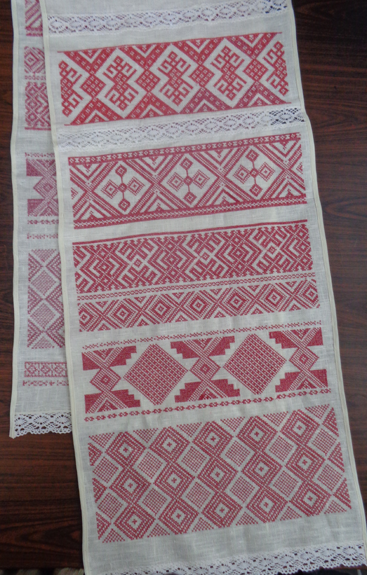

Беларускі ручнік сваімі рукамі

Каб выткаць ручнік, спачатку падрыхтуйце кросны.
Для гэтага, па-першае, навіце доўгія ніткі - аснову тканіны для ручніка.
Падзяліце ніткі на дзве часткі - верхнюю і ніжнюю.
Потым падрыхтуйце
Калі ўсё зрабілі, сядайце за кросны.
Папераменна націскайце нагамі на
Паміж ніткамі ўтвараецца праход, у які вы напраўляеце
Нітачку з
Для гэтага, па-першае, навіце доўгія ніткі - аснову тканіны для ручніка.
Падзяліце ніткі на дзве часткі - верхнюю і ніжнюю.
Потым падрыхтуйце
- папярочныя ніткі. Для гэтага навіце іх на драўляную трубачку -
. Яе ўстаўце ў
.
Калі ўсё зрабілі, сядайце за кросны.
Папераменна націскайце нагамі на
, каб памяняць месцамі верхнюю і ніжнюю часткі нітак.
Паміж ніткамі ўтвараецца праход, у які вы напраўляеце
.
Нітачку з
акуратна кладзіце паміж ніткамі асновы і прыціскайце
- спецыяльным грэбенем. Ніткі пераплятаюцца - і атрымліваецца тканіна для вашага ручніка.
 Loading ...
Loading ...